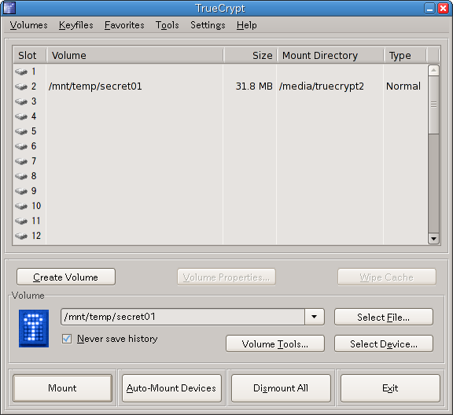
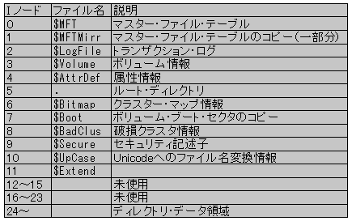
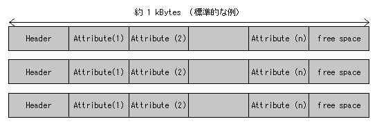
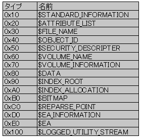
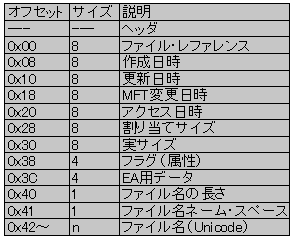

| 完全削除の限界と対処法 |
| 完全削除の限界と対処法 |
FATファイルシステムでは可能であった完全削除処理が、新世代のNTFSでは難しくなりました。その原因と対処法を簡単に説明します。
技術的詳細がわからない方も、この一覧表は必ず通読してください。ここで「削除不可」となっているファイルは、拙作”完全削除”のみでなく、世間で公開されている他の完全消去ソフトウエアでも、技術的に削除不可能・きわめて難しいものです。
ファイル エクスプローラでファイルもしくはフォルダを右クリックして、プロパティよりこれらの機能を確実にOFFにします。なお、暗号化機能はWindows 2000/XP/7 Professional版以上でしか使えません（一般のパソコンにバンドルされているWindows XP/7 Homeにこの機能は存在しませんので安心してください）。
また、暗号化・複合化処理に複合化されているファイルを一時ファイルに書き出しているため、セキュリティリスクがあるとMicrosoftが公式に認めていることは留意しておく必要があるでしょう。
When an existing plaintext file is marked for encryption, it's first copied to a
temporary file. When the process is complete, the temporary file is marked for
deletion, which means portions of the original file may remain on the disk and
could potentially be accessible via a disk editor. These bits of data, referred
to as data shreds or remanence, may be permanently removed by using a revised
version of the cipher.exe tool. (from: Microsoft TechNet "The
Encrypting File System"
http://technet.microsoft.com/en-us/library/cc700811.aspx)
仮想メモリ ファイルに消去したいデータが平文で記録されていては、ファイル本体をいくら完全消去しても意味がありません。十分な物理メモリをコンピュータに取り付けている状態では仮想メモリ機能は無効化するとよいでしょう。
swapoffコマンドを実行して仮想メモリを一時的に無効化できます。再び仮想メモリを使いたくなればswaponコマンドを実行すればよいでしょう。十分なメモリを搭載していて起動時から仮想メモリを無効化したい場合は、スワップパーティションを削除する必要があります。Windowsでは環境変数TEMPで示されたテンポラリ ディレクトリに作られる一時ファイルは自動的には削除されません。たとえば、次のようなスクリプトファイルを作成して、タスクスケジューラでシステム起動時や定時に実行するようにすれば、長期間一時ファイルが残存することを阻止できます。ただし、一時ファイルが何らかのソフトウエアで利用中の場合、思わぬ副作用がある可能性もありますので留意してください。
なお、環境変数はシステム コントロールパネルで確認する以外にも、コマンドプロンプトでset tempと実行すれば画面に表示されます。
Windows 2000/XP/Vista/7 は標準で空き領域の削除コマンドcipher.exeを持っています。管理者権限でログオンし、コマンド・コンソール（cmd.exe）内で次のように実行してください。（d: ドライブを対象とする例）
大容量ハードディスクでこの機能を利用した場合、何時間も掛かることに注意してください。150MBytes/secのアクセス速度を持つハードディスクに500GBytes書き込みするのに要する時間は 500*1024/150 = 3413秒（＝56分）。USB2.0接続のハードディスクなら50MBytes/sec程度しか速度が出ないため168分にもなります。
【Windows で Cipher.exe を使用して削除済みのデータを上書きする方法 ： http://support.microsoft.com/kb/315672/ja 】
単に大きなファイルを作成してフリー領域を埋めたい場合は、管理者権限でfsutil.exeコマンドを用います。1MBytesのファイル（NULLで埋められている）を作成するには次のようなスクリプトになります。
編集時にオリジナルファイルのコピー（一時ファイル）を作成するMicrosoft Office等のアプリケーションソフトで扱うデータファイルの保存先を、暗号化仮想ディスクとすることで、暗号解読しない限り情報流出しないように対策できます。（一時ファイルも暗号化仮想ディスク中に作成されるため）

LinuxでのTrueCrypt実行画面（暗号化ボリューム管理画面）
Linuxでは完全削除を行うプログラムshredが標準で提供されています。1回上書きで完全削除する場合は次のようにします。
ハードディスクやUSBメモリーディスクを処分する前に行う、ディスク全領域の完全消去処理についての解説です。この処理を行ったディスクは「残留磁気を読み取るような高度な解析装置」を持つ一部の国家機関やハードディスク製造メーカーが有する世界で数箇所のラボでしか復元できないといわれています。
cipher.exeコマンドを実行します。（D:ドライブを消去する場合）shredコマンドを用いれば、未フォーマットのディスク全領域を完全消去出来ます。例えば、次のようなコマンドを実行します。
上記の例は、/dev/sda1に対して、3回上書き処理＋1回ゼロクリアを行います。ユーザがより詳細に制御したい場合は、ddコマンドを用いても、これと同様の処理ができます。
なお、ddを用いるときはブロックサイズを適当な大きさまで拡大しておかないと、ディスクアクセス速度が極めて遅くなるので要注意。たとえば、書き込み単位を10MBytes（10*1024*1024bytes）にする場合は…
NTFSの遅延書き込みによりファイル名およびサイズの「完全削除」が出来ない場合があります。
また、「非常に効率的な遅延書き込み」が行われている場合、データ領域すら完全削除できない可能性もあります。
この状況に対する暫定的な対応措置として、機能設定：詳細設定２の「追加削除機能：対象ファイルと同じボリュームに一時ファイルを作る」でディスクキャッシュ量より多いサイズの追加削除（ダミーファイル作成）を行ってください。また、機能設定：基本設定の「ファイル名変更・ファイル サイ変更機能」は機能しない場合がありますので留意してください。
圧縮ファイル、暗号化ファイル、スパース･ファイルは「完全削除」できません。これらのファイルにデータを書き込む場合、OSはファイルのコピーを自動的に作成し、そこに書き込むような仕様になっているからです。OSによる強固な書き込みエラー対策である反面、大量のコピーデータがディスク内に拡散してしまうというセキュリティリスクを作ってしまった悪い例です。
なお、拙作”完全削除”では、スパース ファイルは検出して削除処理をしないようになっています。
MFTのサイズ内に収まる範囲のデータファイルに対する「完全削除」には対応していません。
原因は、MFTに収まる小さなファイルの最初の作成時に、MFTのミラー領域に作成されたミラー・データが削除後にも残るためです。（MFTのミラー領域は本プログラムでは操作出来ません）
この状況に対する暫定的な対応措置として、小さなファイル（1000バイト未満と考えて差し支えありません）の作成時には、データの末尾などに「パディング」領域を設けてMFTにデータが格納されるのを防いでください。たとえば、200バイトのテキストファイルなら、後ろに800個のスペース文字を追加するなどしてください。
MFTミラーにデータが残存することは捨ておくとして、メインMFTのデータストリームに書きこまれているデータを確実に削除するためには、機能設定：詳細設定１の「オーバーラン書き込みサイズ」を0Bytesに設定する必要があります。これは、オーバーラン機能でファイルサイズがMFTデータストリームに収まらなくなった場合、ディスク上に新たにデータ領域が作成され、MFT内は無視（放置）されるからです。
代替データ ストリーム（マルチデータ ストリーム）を使ったファイルの場合、現在見えている（Explorerで通常扱っている）ストリームに対してのみ「完全削除」が行われます。
NTFSで導入されたこれらの新たな機能により「データ（ディスク）が高度に抽象化されて通常利用時の安定性・安全性」が高まった反面、「特殊な条件下を想定したデータのコントロール権」がユーザから取り上げられてしまったことで、セキュリティリスクがより高まってしまったともいえます。
ディスク内にデータの「コピー」が大量に拡散されてしまったことに対処するためには、「デフラグAPI」というWindowsシステム管理機能を利用して、ハードディスクの特定クラスタのデータを上書きすると言う手がありますが、管理者権限が必要な事と、ディスク内のどこにデータが拡散したか検知しようすがないというハードルがあります。現在見えているファイルに対してのみの処理では「完全に保証された完全削除処理」することは出来ません。
よって、圧縮・暗号・スパース ファイルなどのテクノロジを用いている場合は、「全空き領域に巨大なダミーファイルを作り、ダミーデータを書き込む」処理が最低限必要となります。ディスクのフォーマット時間でおわかりのとおり、数TBytesにもなる現在の大容量ディスクでは、これらの処理には何時間もの長い時間がかかります。
「MFTのデータストリーム領域」に消去されずに残っている残骸データに対しては、前述の巨大ダミーファイルによっても削除不可能なため、ハードディスクの全MFTレコードを解析して未使用のデータストリーム領域を全て消去して回るという膨大な作業が必要で、それらの作業中にOSが勝手にディスクにアクセスに行かないように、ロックを掛けて作業すると言う、「OSの機能の一部として作業するに等しい」プログラムを作成し管理者権限で実行しなければなりません。
このようなOSが行うべきディスクのガベージコレクションのような作業を、フリーソフトウエア レベルで安全性を保証して実行するなど不可能です。この機能は、商用ソフトウエアに譲る必要がありますので、拙作”完全削除”で実現する構想はありません。
Windows NT/2000/XP以降で採用されているNTFSの概要は、このヘルプファイルで記述できるほど簡単ではありません。NTFSの簡単な紹介と、「完全削除」を行う場合に関連する点について若干の説明をとどめます。
NTFSでは、データ領域だけでなく、ディスク（NTFSの説明文ではボリュームと言う）自体の管理情報も含め、全てを「ファイル」として扱っている。その中で、ディスクの管理にかかわるファイルを特に「メタファイル」と言っている。

ボリューム上に存在するファイルは、全て「マスター ファイル テーブル（MFT)」によりリスト管理されている。
ヘッダには、最初のアトリビュートの位置とフリーエリアの先頭位置の情報などが含まれている。アトリビュートはファイル名、ボリューム名、セキュリティ記述子、データなどさまざまなものが定義されており、必要に応じて（必要な数だけ）使われる。

アトリビュートは以下のようなものがあり、MFTでは、$FILE_NAME、$SECURITY_DESCRIPTERはほぼ常に存在している。

各アトリビュートは、先頭にはヘッダ（MFTのヘッダとは違う）があり、その後にアトリビュートごとに定義されたデータが続いている。
参考例として、$FILE_NAME アトリビュートを下に示す。

実際のファイルの格納は、これらの機構を使って下の図のように行われている。データサイズが小さなファイルの場合は、直接MFTのフリーエリアに$DATAアトリビュートを作りそこに格納する。（FATからの大きな進歩）